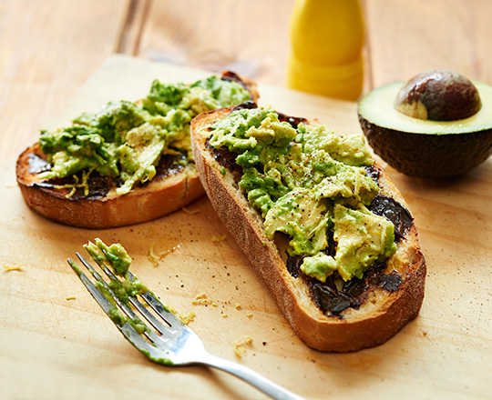

Vegemite and Avocado on Toast Recipe

Description
A classic Australian snack made by spreading a thin layer of Vegemite, a savory yeast extract, on buttered toast.
Simple, salty, and full of umami, it's often enjoyed with a cup of tea or coffee.
Ingredients
- 1 avocado, peeled, sliced
- 2 tsp vegemite
- 4 slice sourdough
- butter (for spreading)
Method
- Toast bread.
- Spread toast with butter and Vegemite.
- Top with avocado.
- Serve.
Homepage